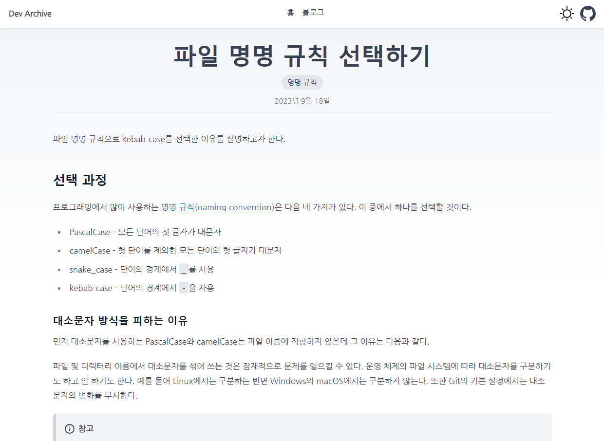
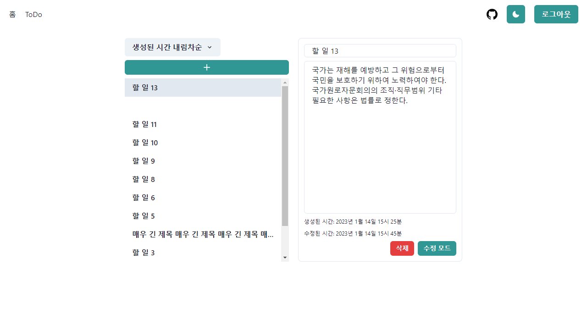

안녕하세요.
좋은 코드를 만들기 위해 끊임없이 고민하는 개발자 이민철입니다.
제 프로젝트를 소개합니다.
Dev Archive
- https://dev-archive-seven.vercel.app/
- GitHub
- Astro, Tailwind CSS, MDX
개인 블로그입니다. 완전한 커스터마이징과 블로그에 대한 이해를 위해 기존 블로그 서비스를 이용하는 대신 블로그 자체를 직접 제작하였습니다.
정적 콘텐츠에 최적화된 Astro로 만들었습니다. 공식 블로그 예시를 기반으로 스타일을 변경하고 기능을 추가했습니다. 기본적인 블로그 기능에 더해 초안, 권고, 태그, 아이콘, 시리즈, 포스트 네비게이션 등이 추가되었습니다. Tailwind CSS을 적용하였으며 다크 모드와 모바일에 대응됩니다.
ToDo
- https://wanted-pre-onboarding-challenge-fe-1-kappa.vercel.app/
- GitHub
- React, Next.js, Chakra UI, Google Sheets, TanStack Query, React Hook Form, Cypress, Vercel
할 일과 간단한 인증이 구현된 웹사이트입니다. 원티드의 프론트엔드 챌린지에서 수행했던 과제를 더 다듬고 기능을 추가했습니다. 프로젝트를 마친 뒤에는 클라이언트 상태와 서버 상태를 구분하여 생각할 수 있게 되었습니다.
Vercel에 배포하기 위해 기존 백엔드인 Express.js에서 Next.js로 마이그레이션을 진행했습니다. 간단한 인증, 할 일 CRUD, 기준별 정렬, URL 기반 할 일 조회가 구현되었습니다.